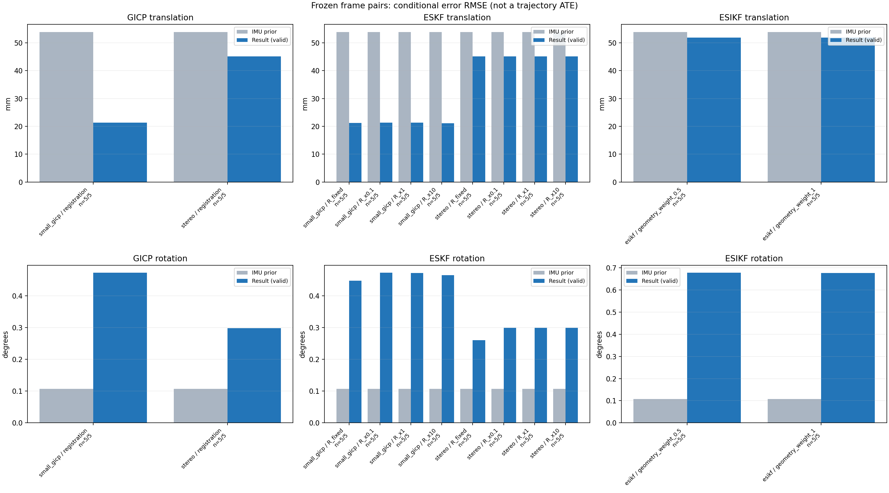

20261015_113028_roll_right · depth=disparity_cache · cache=c52010d0f993354ac352
模型视差：/home/ubuntu22/slam/SIO_SLAM/models/tensorrt/disp_896x448_fp16.plan；engine SHA256=604cf6ac1f705c877260711730dd5d2d58c2a21f3020c03c668401ef7fb1e768。输入为生产裁剪与光照处理后的 RGB 0..255；此实验使用原始浮点像素视差，不应用完整前端的邻域视差后处理。
原始 ONNX SHA256：e9f49736a65d68d06681add463866b6defdf78fdd7f4f50f6cc941b682fdc0bc。
代价体图改写验证：ONNX Runtime 固定随机特征输入，最大绝对误差 0；该项检查图改写，完整模型精度仍需由录制数据评估。
配准代码版本：744ac2d993ae629b0cc44a3b1d995e04ab4fad48；观测生成版本：744ac2d993ae629b0cc44a3b1d995e04ab4fad48。
固定图像对与纯 IMU 先验；ESKF 回放固定 GICP 观测，ESIKF 直接读取点云。真值只用于此报告。
同时查看 converged 与 solver_status：上游默认 Stereo 在 max_iter / stopped_at_minimum 时也可能置 converged=true。valid 表示输入检查通过，不表示精度提升。欧氏 GICP 未提供独立的点距 RMSE，该列显示 NaN。
误差按每对图像的锚点计算，单位 m / degrees。此处 RMSE 不是全序列 ATE；末帧受同一锚点条件约束。NIS 与条件马氏距离是诊断量，少量相关图像对不能用于宣称协方差已校准。
全部指标 CSV · R / P / K 矩阵 CSV · Stereo 求解逐轮 CSV · ESIKF 逐轮 CSV · 配置快照 · 矢量图
| stage | method | variant | valid | total | translation RMSE (m) | rotation RMSE (deg) |
|---|---|---|---|---|---|---|
| esikf | esikf | geometry_weight_0.5 | 5 | 5 | 0.051879 | 0.6775 |
| esikf | esikf | geometry_weight_1 | 5 | 5 | 0.051918 | 0.67613 |
| eskf | small_gicp | R_fixed | 5 | 5 | 0.02117 | 0.44688 |
| eskf | small_gicp | R_x0.1 | 5 | 5 | 0.021285 | 0.47218 |
| eskf | small_gicp | R_x1 | 5 | 5 | 0.021271 | 0.47135 |
| eskf | small_gicp | R_x10 | 5 | 5 | 0.021157 | 0.46512 |
| eskf | stereo | R_fixed | 5 | 5 | 0.045123 | 0.26023 |
| eskf | stereo | R_x0.1 | 5 | 5 | 0.045127 | 0.29852 |
| eskf | stereo | R_x1 | 5 | 5 | 0.045127 | 0.29852 |
| eskf | stereo | R_x10 | 5 | 5 | 0.045127 | 0.29849 |
| gicp | small_gicp | registration | 5 | 5 | 0.021287 | 0.47228 |
| gicp | stereo | registration | 5 | 5 | 0.045127 | 0.29853 |

| stage | case | method | variant | status | solver_status | inliers | converged | covariance_convention | covariance_from_hessian | fitness | registration_rmse_m | prior_trans_error_m | result_trans_error_m | prior_rot_error_deg | result_rot_error_deg | R_rot_trace_rad2 | R_pos_trace_m2 | nis_regularized |
|---|---|---|---|---|---|---|---|---|---|---|---|---|---|---|---|---|---|---|
| gicp | static_start | small_gicp | registration | eligible | 10141 | 1 | right_source_body | 1 | 0.97052 | nan | 7.6181e-05 | 0.011192 | 0.0061233 | 0.25274 | 2.9158e-06 | 4.6267e-05 | nan | |
| gicp | static_start | stereo | registration | eligible | max_iter | 9433 | 1 | left_target_body | 1 | 0.89855 | 0.046033 | 7.6181e-05 | 0.0011134 | 0.0061233 | 0.015406 | 1.3543e-08 | 1.2978e-07 | nan |
| gicp | sync_motion | small_gicp | registration | eligible | 9845 | 1 | right_source_body | 1 | 0.92311 | nan | 0.00070607 | 0.019626 | 0.0094797 | 0.2554 | 3.269e-06 | 4.9069e-05 | nan | |
| gicp | sync_motion | stereo | registration | eligible | max_iter | 9585 | 1 | left_target_body | 1 | 0.89714 | 0.07899 | 0.00070607 | 0.0021725 | 0.0094797 | 0.014401 | 1.3951e-08 | 1.3343e-07 | nan |
| gicp | main_motion | small_gicp | registration | eligible | 12390 | 1 | right_source_body | 1 | 0.93186 | nan | 0.001643 | 0.029406 | 0.075969 | 0.4492 | 2.3843e-06 | 4.6318e-05 | nan | |
| gicp | main_motion | stereo | registration | eligible | max_iter | 11837 | 1 | left_target_body | 1 | 0.89127 | 0.066401 | 0.001643 | 0.0015326 | 0.075969 | 0.076253 | 1.0674e-08 | 1.1922e-07 | nan |
| gicp | main_motion_long | small_gicp | registration | eligible | 12069 | 1 | right_source_body | 1 | 0.79188 | nan | 0.0098867 | 0.020892 | 0.22748 | 0.61769 | 2.7342e-06 | 5.2844e-05 | nan | |
| gicp | main_motion_long | stereo | registration | eligible | max_iter | 11778 | 1 | left_target_body | 1 | 0.76342 | 0.087208 | 0.0098867 | 0.0077845 | 0.22748 | 0.26314 | 1.1409e-08 | 1.346e-07 | nan |
| gicp | static_end | small_gicp | registration | eligible | 9727 | 1 | right_source_body | 1 | 0.96155 | nan | 0.1201 | 0.021307 | 0.0045728 | 0.63468 | 4.0424e-06 | 4.5482e-05 | nan | |
| gicp | static_end | stereo | registration | eligible | max_iter | 7752 | 1 | left_target_body | 1 | 0.76806 | 0.10658 | 0.1201 | 0.10056 | 0.0045728 | 0.60836 | 1.9623e-08 | 1.9433e-07 | nan |
| eskf | static_start | small_gicp | R_x0.1 | updated | 10141 | 1 | right_source_body | 1 | 0.97052 | nan | 7.6181e-05 | 0.011189 | 0.0061233 | 0.25272 | 2.9158e-07 | 4.6267e-06 | 0.038054 | |
| eskf | static_start | small_gicp | R_x1 | updated | 10141 | 1 | right_source_body | 1 | 0.97052 | nan | 7.6181e-05 | 0.011159 | 0.0061233 | 0.25259 | 2.9158e-06 | 4.6267e-05 | 0.037963 | |
| eskf | static_start | small_gicp | R_x10 | updated | 10141 | 1 | right_source_body | 1 | 0.97052 | nan | 7.6181e-05 | 0.01087 | 0.0061233 | 0.25135 | 2.9158e-05 | 0.00046267 | 0.037085 | |
| eskf | static_start | small_gicp | R_fixed | updated | 10141 | 1 | right_source_body | 1 | 0.97052 | nan | 7.6181e-05 | 0.010517 | 0.0061233 | 0.23655 | 0.00022846 | 0.0012 | 0.03537 | |
| eskf | static_start | stereo | R_x0.1 | updated | max_iter | 9433 | 1 | left_target_body | 1 | 0.89855 | 0.046033 | 7.6181e-05 | 0.0011134 | 0.0061233 | 0.015406 | 1.3543e-09 | 1.2978e-08 | 0.00025401 |
| eskf | static_start | stereo | R_x1 | updated | max_iter | 9433 | 1 | left_target_body | 1 | 0.89855 | 0.046033 | 7.6181e-05 | 0.0011134 | 0.0061233 | 0.015405 | 1.3543e-08 | 1.2978e-07 | 0.00025401 |
| eskf | static_start | stereo | R_x10 | updated | max_iter | 9433 | 1 | left_target_body | 1 | 0.89855 | 0.046033 | 7.6181e-05 | 0.0011133 | 0.0061233 | 0.015403 | 1.3543e-07 | 1.2978e-06 | 0.00025398 |
| eskf | static_start | stereo | R_fixed | updated | max_iter | 9433 | 1 | left_target_body | 1 | 0.89855 | 0.046033 | 7.6181e-05 | 0.001056 | 0.0061233 | 0.014264 | 0.00022846 | 0.0012 | 0.00023639 |
| eskf | sync_motion | small_gicp | R_x0.1 | updated | 9845 | 1 | right_source_body | 1 | 0.92311 | nan | 0.00070607 | 0.019621 | 0.0094797 | 0.25476 | 3.269e-07 | 4.9069e-06 | 0.32196 | |
| eskf | sync_motion | small_gicp | R_x1 | updated | 9845 | 1 | right_source_body | 1 | 0.92311 | nan | 0.00070607 | 0.01958 | 0.0094797 | 0.24921 | 3.269e-06 | 4.9069e-05 | 0.31296 | |
| eskf | sync_motion | small_gicp | R_x10 | updated | 9845 | 1 | right_source_body | 1 | 0.92311 | nan | 0.00070607 | 0.019298 | 0.0094797 | 0.2086 | 3.269e-05 | 0.00049069 | 0.24465 | |
| eskf | sync_motion | small_gicp | R_fixed | updated | 9845 | 1 | right_source_body | 1 | 0.92311 | nan | 0.00070607 | 0.01941 | 0.0094797 | 0.15577 | 0.00022846 | 0.0012 | 0.12788 | |
| eskf | sync_motion | stereo | R_x0.1 | updated | max_iter | 9585 | 1 | left_target_body | 1 | 0.89714 | 0.07899 | 0.00070607 | 0.0021725 | 0.0094797 | 0.014401 | 1.3951e-09 | 1.3343e-08 | 0.0011961 |
| eskf | sync_motion | stereo | R_x1 | updated | max_iter | 9585 | 1 | left_target_body | 1 | 0.89714 | 0.07899 | 0.00070607 | 0.0021725 | 0.0094797 | 0.014401 | 1.3951e-08 | 1.3343e-07 | 0.001196 |
| eskf | sync_motion | stereo | R_x10 | updated | max_iter | 9585 | 1 | left_target_body | 1 | 0.89714 | 0.07899 | 0.00070607 | 0.0021721 | 0.0094797 | 0.014397 | 1.3951e-07 | 1.3343e-06 | 0.0011954 |
| eskf | sync_motion | stereo | R_fixed | updated | max_iter | 9585 | 1 | left_target_body | 1 | 0.89714 | 0.07899 | 0.00070607 | 0.0021435 | 0.0094797 | 0.012081 | 0.00022846 | 0.0012 | 0.00054979 |
| eskf | main_motion | small_gicp | R_x0.1 | updated | 12390 | 1 | right_source_body | 1 | 0.93186 | nan | 0.001643 | 0.029405 | 0.075969 | 0.44917 | 2.3843e-07 | 4.6318e-06 | 0.03972 | |
| eskf | main_motion | small_gicp | R_x1 | updated | 12390 | 1 | right_source_body | 1 | 0.93186 | nan | 0.001643 | 0.029395 | 0.075969 | 0.44893 | 2.3843e-06 | 4.6318e-05 | 0.03963 | |
| eskf | main_motion | small_gicp | R_x10 | updated | 12390 | 1 | right_source_body | 1 | 0.93186 | nan | 0.001643 | 0.029298 | 0.075969 | 0.44661 | 2.3843e-05 | 0.00046318 | 0.038753 | |
| eskf | main_motion | small_gicp | R_fixed | updated | 12390 | 1 | right_source_body | 1 | 0.93186 | nan | 0.001643 | 0.029384 | 0.075969 | 0.43208 | 0.00022846 | 0.0012 | 0.033066 | |
| eskf | main_motion | stereo | R_x0.1 | updated | max_iter | 11837 | 1 | left_target_body | 1 | 0.89127 | 0.066401 | 0.001643 | 0.0015326 | 0.075969 | 0.076253 | 1.0674e-09 | 1.1922e-08 | 0.00020851 |
| eskf | main_motion | stereo | R_x1 | updated | max_iter | 11837 | 1 | left_target_body | 1 | 0.89127 | 0.066401 | 0.001643 | 0.0015325 | 0.075969 | 0.076253 | 1.0674e-08 | 1.1922e-07 | 0.0002085 |
| eskf | main_motion | stereo | R_x10 | updated | max_iter | 11837 | 1 | left_target_body | 1 | 0.89127 | 0.066401 | 0.001643 | 0.0015324 | 0.075969 | 0.076253 | 1.0674e-07 | 1.1922e-06 | 0.00020847 |
| eskf | main_motion | stereo | R_fixed | updated | max_iter | 11837 | 1 | left_target_body | 1 | 0.89127 | 0.066401 | 0.001643 | 0.001521 | 0.075969 | 0.076072 | 0.00022846 | 0.0012 | 0.00017339 |
| eskf | main_motion_long | small_gicp | R_x0.1 | updated | 12069 | 1 | right_source_body | 1 | 0.79188 | nan | 0.0098867 | 0.020892 | 0.22748 | 0.61764 | 2.7342e-07 | 5.2844e-06 | 0.075124 | |
| eskf | main_motion_long | small_gicp | R_x1 | updated | 12069 | 1 | right_source_body | 1 | 0.79188 | nan | 0.0098867 | 0.020894 | 0.22748 | 0.61727 | 2.7342e-06 | 5.2844e-05 | 0.074938 | |
| eskf | main_motion_long | small_gicp | R_x10 | updated | 12069 | 1 | right_source_body | 1 | 0.79188 | nan | 0.0098867 | 0.020913 | 0.22748 | 0.61375 | 2.7342e-05 | 0.00052844 | 0.073137 | |
| eskf | main_motion_long | small_gicp | R_fixed | updated | 12069 | 1 | right_source_body | 1 | 0.79188 | nan | 0.0098867 | 0.020879 | 0.22748 | 0.58458 | 0.00022846 | 0.0012 | 0.061599 | |
| eskf | main_motion_long | stereo | R_x0.1 | updated | max_iter | 11778 | 1 | left_target_body | 1 | 0.76342 | 0.087208 | 0.0098867 | 0.0077845 | 0.22748 | 0.26314 | 1.1409e-09 | 1.346e-08 | 0.008593 |
| eskf | main_motion_long | stereo | R_x1 | updated | max_iter | 11778 | 1 | left_target_body | 1 | 0.76342 | 0.087208 | 0.0098867 | 0.0077845 | 0.22748 | 0.26314 | 1.1409e-08 | 1.346e-07 | 0.0085929 |
| eskf | main_motion_long | stereo | R_x10 | updated | max_iter | 11778 | 1 | left_target_body | 1 | 0.76342 | 0.087208 | 0.0098867 | 0.0077843 | 0.22748 | 0.26313 | 1.1409e-07 | 1.346e-06 | 0.0085912 |
| eskf | main_motion_long | stereo | R_fixed | updated | max_iter | 11778 | 1 | left_target_body | 1 | 0.76342 | 0.087208 | 0.0098867 | 0.0077824 | 0.22748 | 0.25669 | 0.00022846 | 0.0012 | 0.0069965 |
| eskf | static_end | small_gicp | R_x0.1 | updated | 9727 | 1 | right_source_body | 1 | 0.96155 | nan | 0.1201 | 0.021307 | 0.0045728 | 0.63464 | 4.0424e-07 | 4.5482e-06 | 0.029598 | |
| eskf | static_end | small_gicp | R_x1 | updated | 9727 | 1 | right_source_body | 1 | 0.96155 | nan | 0.1201 | 0.021302 | 0.0045728 | 0.63435 | 4.0424e-06 | 4.5482e-05 | 0.029551 | |
| eskf | static_end | small_gicp | R_x10 | updated | 9727 | 1 | right_source_body | 1 | 0.96155 | nan | 0.1201 | 0.021255 | 0.0045728 | 0.63153 | 4.0424e-05 | 0.00045482 | 0.029107 | |
| eskf | static_end | small_gicp | R_fixed | updated | 9727 | 1 | right_source_body | 1 | 0.96155 | nan | 0.1201 | 0.021308 | 0.0045728 | 0.62438 | 0.00022846 | 0.0012 | 0.028054 | |
| eskf | static_end | stereo | R_x0.1 | updated | max_iter | 7752 | 1 | left_target_body | 1 | 0.76806 | 0.10658 | 0.1201 | 0.10056 | 0.0045728 | 0.60835 | 1.9623e-09 | 1.9433e-08 | 0.30019 |
| eskf | static_end | stereo | R_x1 | updated | max_iter | 7752 | 1 | left_target_body | 1 | 0.76806 | 0.10658 | 0.1201 | 0.10057 | 0.0045728 | 0.60834 | 1.9623e-08 | 1.9433e-07 | 0.30018 |
| eskf | static_end | stereo | R_x10 | updated | max_iter | 7752 | 1 | left_target_body | 1 | 0.76806 | 0.10658 | 0.1201 | 0.10057 | 0.0045728 | 0.60827 | 1.9623e-07 | 1.9433e-06 | 0.30013 |
| eskf | static_end | stereo | R_fixed | updated | max_iter | 7752 | 1 | left_target_body | 1 | 0.76806 | 0.10658 | 0.1201 | 0.10056 | 0.0045728 | 0.51632 | 0.00022846 | 0.0012 | 0.24093 |
| esikf | static_start | esikf | geometry_weight_1 | updated | 9346 | 1 | 1 | 0 | 0 | 7.6181e-05 | 0.00044462 | 0.0061233 | 0.012793 | 1.4895e-07 | 8.9459e-07 | nan | ||
| esikf | static_start | esikf | geometry_weight_0.5 | updated | 9346 | 1 | 1 | 0 | 0 | 7.6181e-05 | 0.00044621 | 0.0061233 | 0.012821 | 2.978e-07 | 1.7884e-06 | nan | ||
| esikf | sync_motion | esikf | geometry_weight_1 | updated | 9741 | 1 | 1 | 0 | 0 | 0.00070607 | 0.0086189 | 0.0094797 | 0.34152 | 1.4433e-07 | 8.5521e-07 | nan | ||
| esikf | sync_motion | esikf | geometry_weight_0.5 | updated | 9740 | 1 | 1 | 0 | 0 | 0.00070607 | 0.0085974 | 0.0094797 | 0.34114 | 2.8861e-07 | 1.7099e-06 | nan | ||
| esikf | main_motion | esikf | geometry_weight_1 | updated | 12070 | 1 | 1 | 0 | 0 | 0.001643 | 0.0014188 | 0.075969 | 0.044248 | 1.1952e-07 | 8.8752e-07 | nan | ||
| esikf | main_motion | esikf | geometry_weight_0.5 | updated | 12070 | 1 | 1 | 0 | 0 | 0.001643 | 0.00142 | 0.075969 | 0.044275 | 2.39e-07 | 1.7746e-06 | nan | ||
| esikf | main_motion_long | esikf | geometry_weight_1 | updated | 12274 | 1 | 1 | 0 | 0 | 0.0098867 | 0.0087627 | 0.22748 | 0.19302 | 1.2802e-07 | 9.1696e-07 | nan | ||
| esikf | main_motion_long | esikf | geometry_weight_0.5 | updated | 12287 | 1 | 1 | 0 | 0 | 0.0098867 | 0.0092878 | 0.22748 | 0.19584 | 2.5404e-07 | 1.8094e-06 | nan | ||
| esikf | static_end | esikf | geometry_weight_1 | updated_not_converged | 9099 | 0 | 1 | 0 | 0 | 0.1201 | 0.11543 | 0.0045728 | 1.4594 | 1.7823e-07 | 1.1194e-06 | nan | ||
| esikf | static_end | esikf | geometry_weight_0.5 | updated_not_converged | 9101 | 0 | 1 | 0 | 0 | 0.1201 | 0.1153 | 0.0045728 | 1.4623 | 3.5596e-07 | 2.2346e-06 | nan |